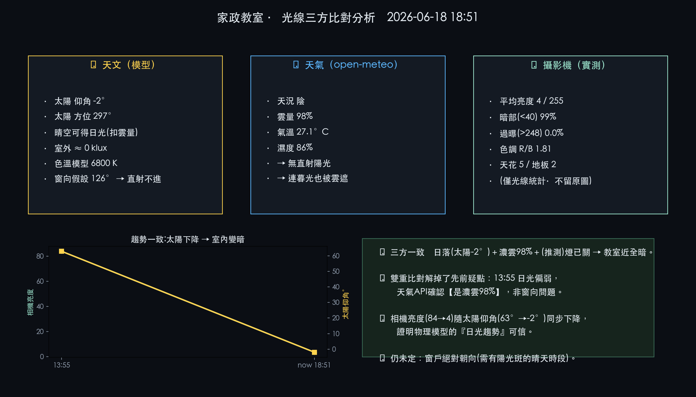
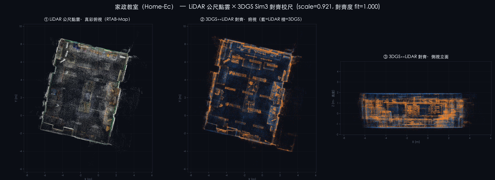

用「世界模型」推算家政教室在任一時刻的自然光狀態（地板照度、受光區、方向、色溫）。
核心校準成果：窗戶朝向 ≈ 東（約 88°），用 3 天現成錄影的室內亮度曲線配對太陽位置反推而得——
取代先前的假設值 126°，模擬從「假設」變成「資料校準」。
① 此刻光線世界模型

幾何（LiDAR PCA ≈10.8×9.3m、室高3.23m）＋ 太陽位置 ＋ 日光物理 → 地板照度熱圖、太陽方向、色溫
② 窗向校準：3 天亮度曲線

同一太陽仰角下，上午（太陽在東）室內均亮 117 ≫ 下午 78；峰值與過曝都在上午 → 窗朝東
③ 三方比對（天文 × 天氣 × 攝影機）

三個獨立來源交叉驗證：天文（理論日光）× 天氣（雲量，open-meteo）× 攝影機（室內實測亮度/色溫，僅取數值）。傍晚一致：太陽−2°＋濃雲98%＋近全黑 → 互相印證。
相機實測校準（單張、純數值、不留原圖、不辨識人）
| 指標 | 實測 | 意義 |
|---|---|---|
| 平均亮度 | 84 / 255 | 中偏暗，非被日光灌滿 |
| 過曝(>248) | 0.9% | 無大面積直射陽光 |
| 色調 R/B | 1.19（偏暖） | 暖色人工照明為主（日光會偏冷） |
| 亮度分佈 | 天花100 > 地板69 | 主光源在天花（燈），非側窗日光 |
結論：當下＝暖色人工照明為主、無大面積直射陽光，與物理模型「太陽在西、東向窗下午照不到直射」一致。
空間校準：LiDAR ↔ 3DGS 對齊

3DGS 場景以 Sim3 對齊到 RTAB-Map 公尺 LiDAR 點雲（含尺度與重力定向），房間量測與光線模型的幾何皆由此而來。
方法：① 幾何由家政 LiDAR 點雲（143 萬點）PCA 取房間矩形與窗牆；② 太陽以天文公式（赤緯＋時差＋時角）算仰角/方位；③ 晴空照度模型 ＋ 日光因子隨進深衰減 → 地板照度，太陽落在窗向可受光範圍時加直射陽光斑。
隱私：相機僅取整體亮度/色溫/亮區方向等數值，未檢視原圖、未辨識人、原圖已刪除。